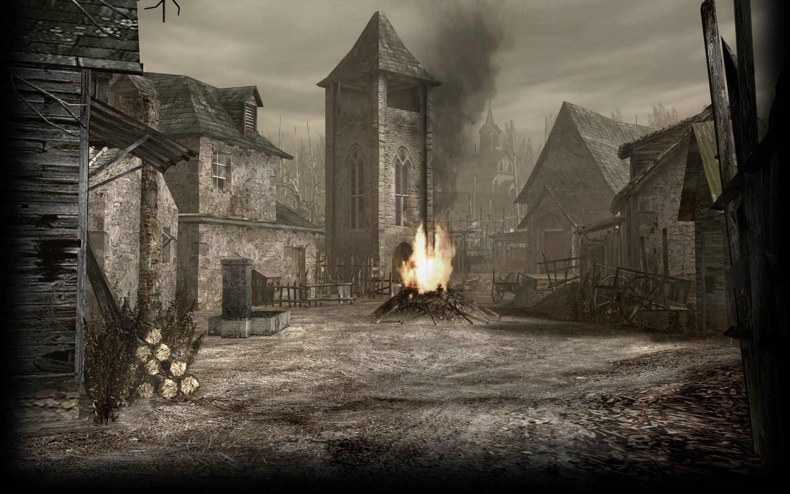
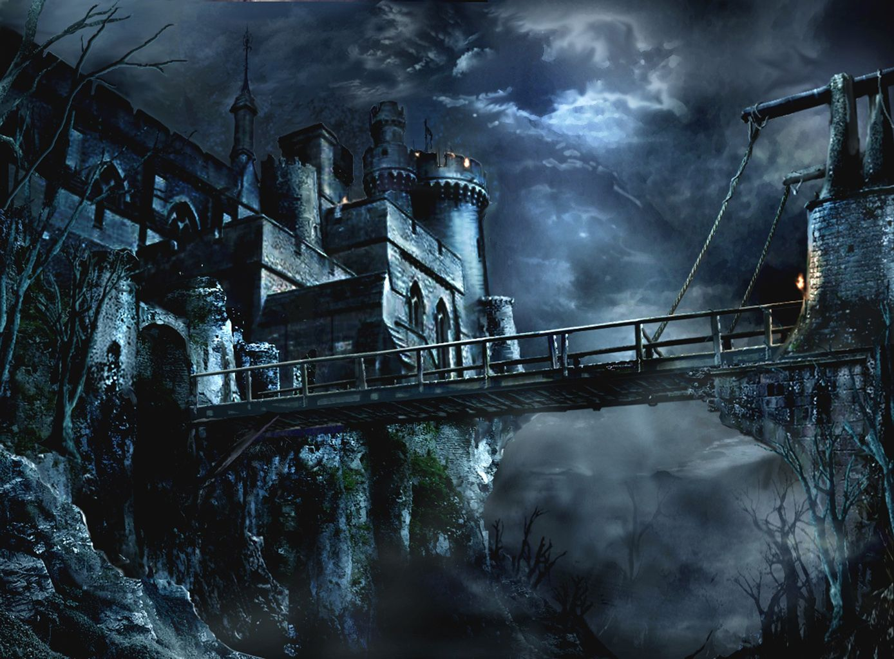
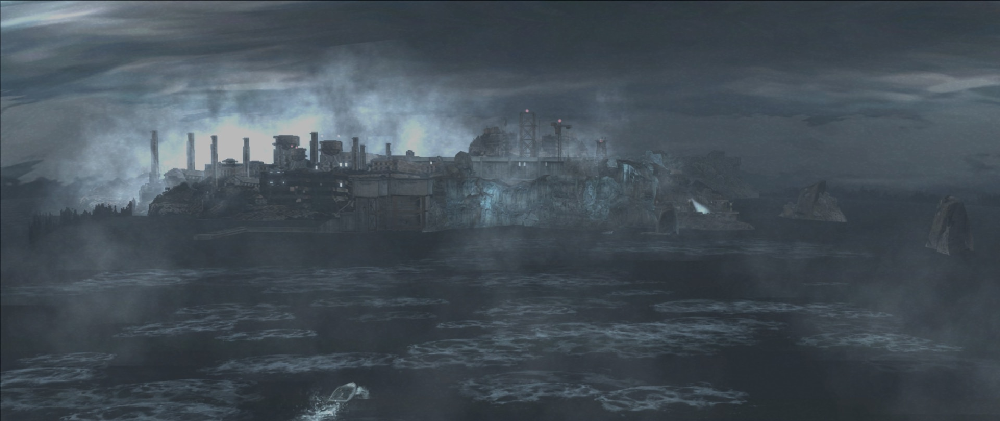

A primeira grande região explorada por Leon. Um vilarejo aparentemente tranquilo, mas dominado pelos Ganados e pelos seguidores de Los Illuminados. É onde começa a missão de resgate de Ashley.

enorme castelo de Ramon Salazar, localizado após a região da vila. Leon enfrenta novos inimigos e armadilhas enquanto avança pelas áreas do castelo em busca de Ashley.

Uma instalação controlada pelos Illuminados e fortemente protegida por soldados. É a última grande região da aventura, onde Leon enfrenta alguns dos maiores desafios antes do confronto final.
Obrigado por chegar até aqui! Espero que tenha gostado de explorar o universo de Resident Evil 4(;=;).